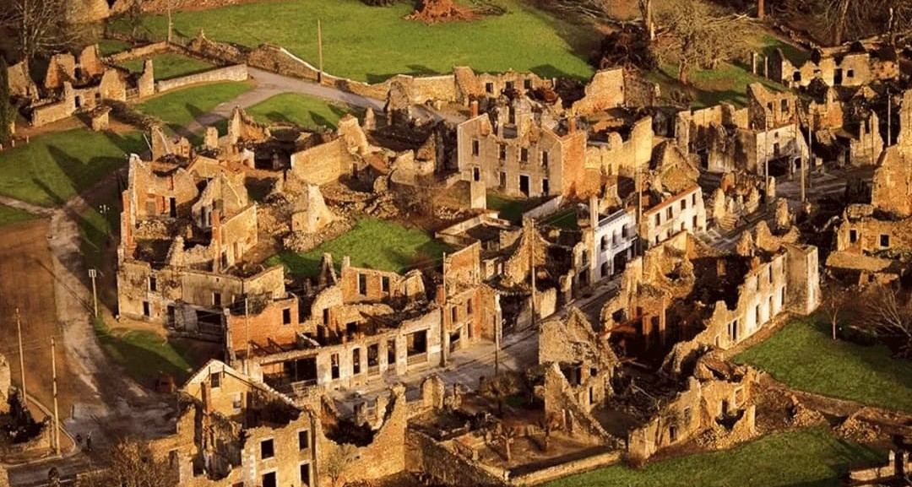
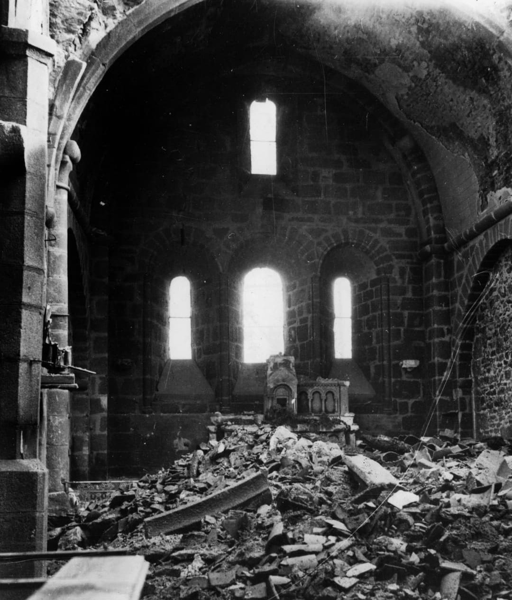
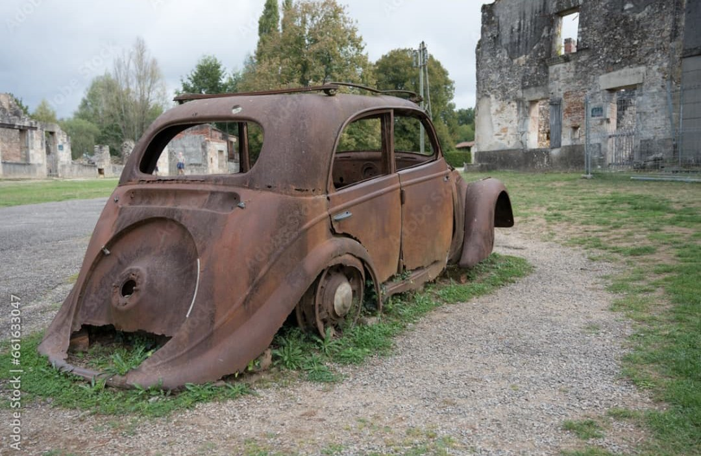

Oradour-sur-Glane est l’un des lieux de mémoire les plus tragiques de France. Le 10 juin 1944, le village est entièrement détruit par la division SS Das Reich, causant la mort de 642 habitants.
Les ruines ont été conservées en l’état après la guerre, devenant un témoignage direct des crimes nazis commis sur le sol français.
Après le Débarquement du 6 juin 1944, la division SS Das Reich remonte du Sud-Ouest vers la Normandie. Sur son trajet, elle mène des opérations de terreur contre les civils et les résistants.
Le 10 juin, Oradour-sur-Glane est encerclé sans avertissement. Les habitants sont rassemblés sous prétexte d’un contrôle d’identité.
Les hommes sont séparés des femmes et des enfants. Les hommes sont fusillés dans des granges, puis les bâtiments sont incendiés.
Les femmes et enfants sont enfermés dans l’église. Les SS y déposent des explosifs, puis mettent le feu. Très peu de personnes survivent.

Après la guerre, le général de Gaulle décide de ne pas reconstruire Oradour-sur-Glane. Le village est laissé tel qu’il était après l’incendie, devenant un musée à ciel ouvert.
Les ruines témoignent encore aujourd’hui de la violence extrême du massacre : maisons éventrées, école détruite, voitures calcinées.

Oradour-sur-Glane est aujourd’hui un haut lieu de mémoire. Des milliers de visiteurs viennent chaque année pour comprendre, se recueillir, et transmettre l’histoire aux générations futures.
Le Centre de la Mémoire, inauguré en 1999, permet de replacer le massacre dans le contexte de l’occupation et de la barbarie nazie.